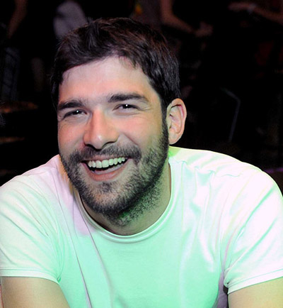
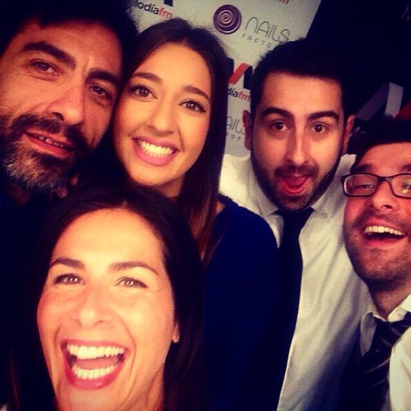
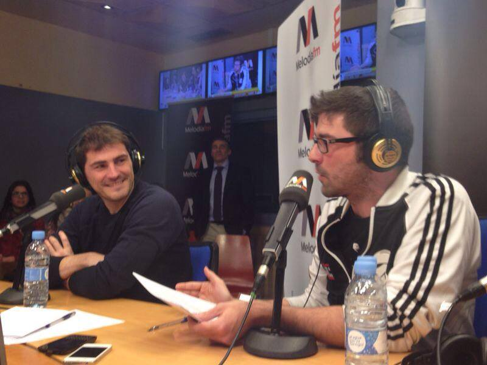
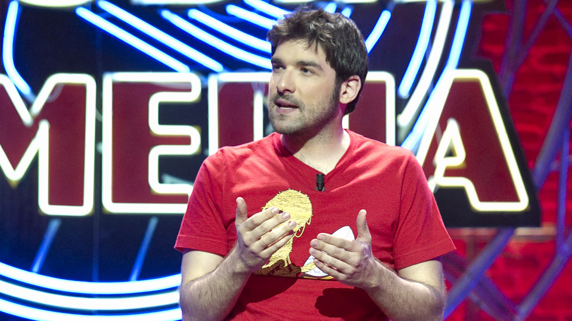
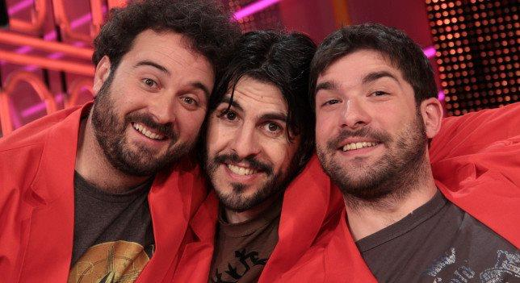
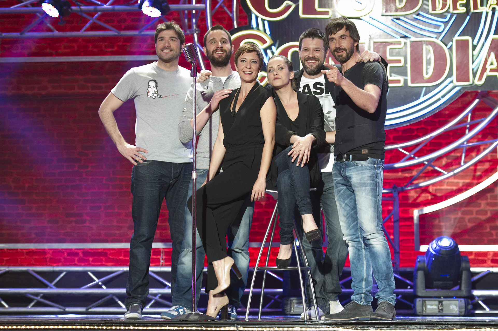
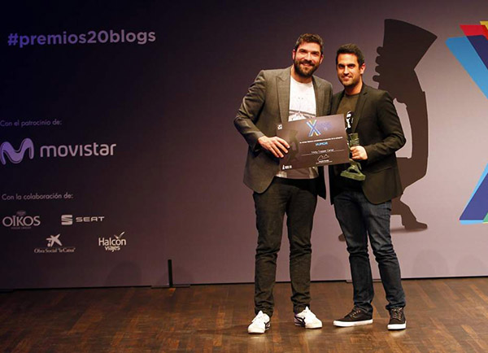
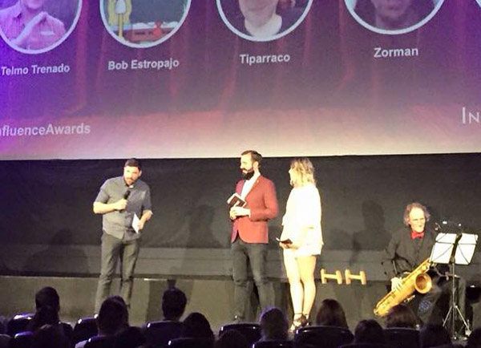

Empezó en los bares y nunca los dejó, pero fue añadiendo más cosas: salas, teatros, televisión, radio… Más de quince años encima de los escenarios haciendo lo que mejor se le da: hacer reír a la gente.
Forma parte del equipo de Nuria Roca en el morning show Lo Mejor Que Te Puede Pasar en Melodía FM, donde combaten el sueño de lunes a viernes de 6 a 10 de la mañana.
Si después de oír su voz quieres dar un paso más en tu relación y verlo de cuerpo entero, puedes hacerlo en programas como El Club De La Comedia (La Sexta) o Sopa de Gansos (Cuatro).

Lo Mejor Que Te Puede Pasar es el morning show de éxito que puedes escuchar en Melodía FM todos los días de 6 a 10 de la mañana.
Nuria Roca y su equipo — Juan Del Val, Bernat Barrachina, Sara Ramos y Nacho García — tienen un propósito: que arranques el día con una buena dosis de actualidad, humor y buena música.
Escuchar en Melodía FM →

Monologuista, colaborador, guionista, reportero… delante y detrás de la cámara, Nacho García ha participado en:



Ya sea con uno de sus monólogos o con un guion específico adaptado para la ocasión, Nacho García puede actuar en presentaciones de productos, charlas, entregas de premios, cenas de empresa…


Para contrataciones, actuaciones, eventos de empresa o cualquier consulta, escríbenos y nos pondremos en contacto contigo lo antes posible.
Enviar mensaje